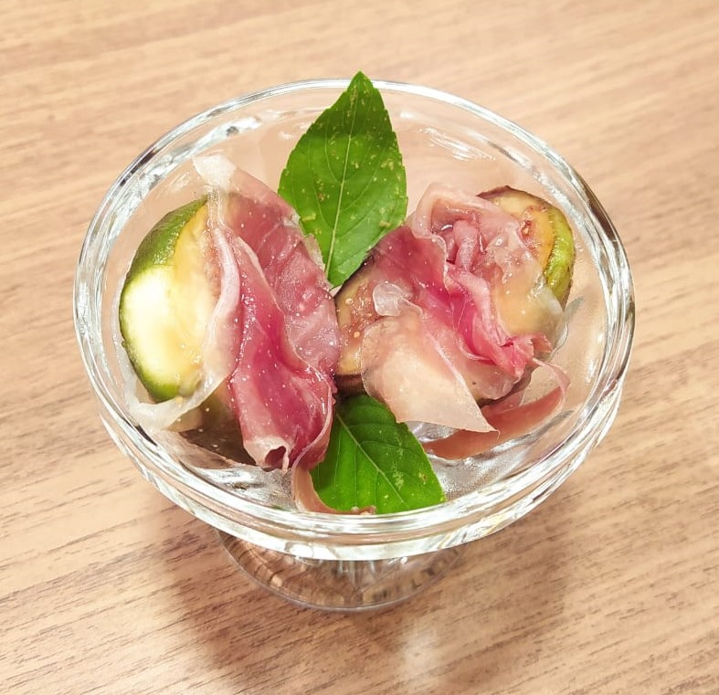
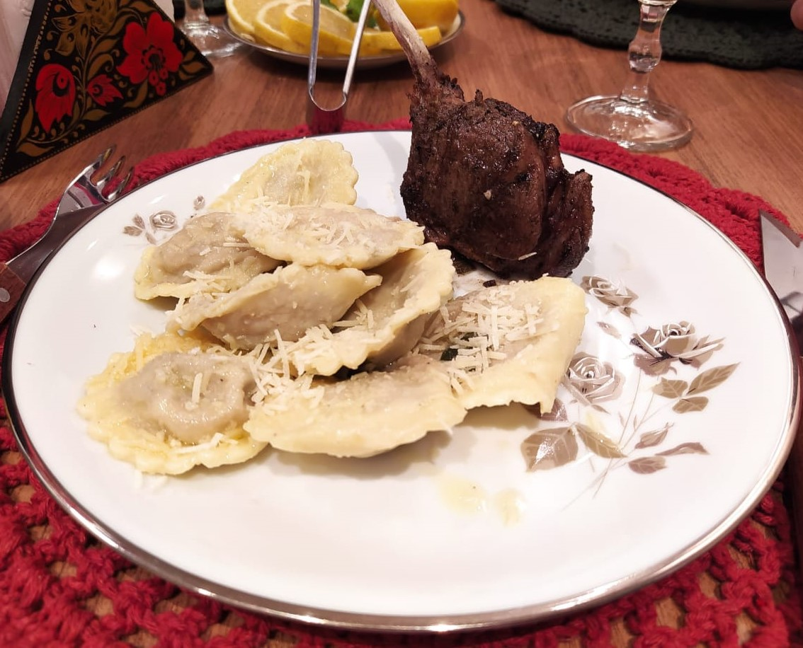
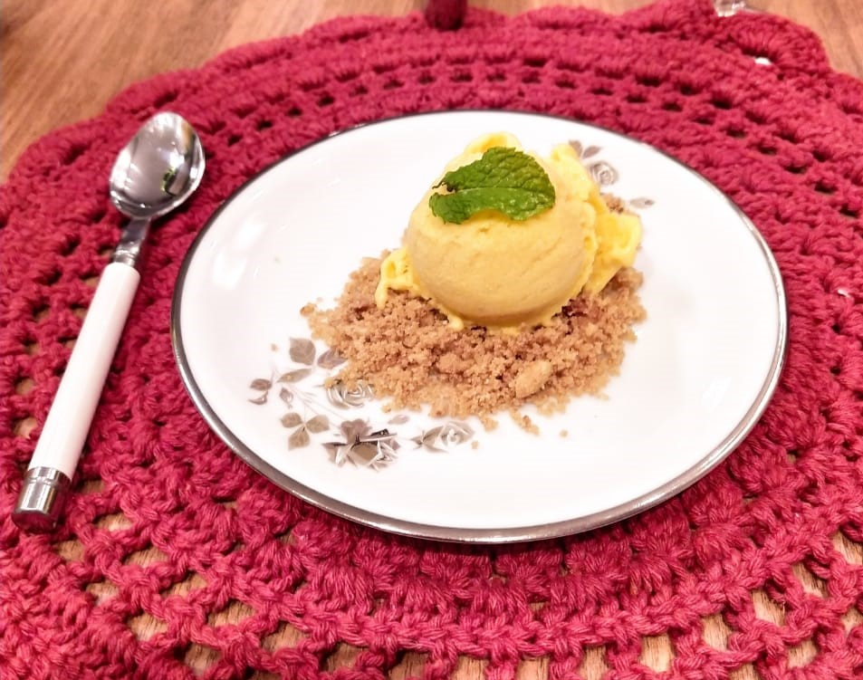

-

Entrada: Figo com presunto parma
Deliciosa entrada de figo assada com presunto parma, folhas de manjericão e mel.
-

Prato Principal: Macarrão com cordeiro
Macarrão com massa caseira recheado com queijo, alho negro e amêmdoas, finalizado com molho de salvia, acompanhado de carne de cordeiro selado e finalizado no forno.
-

Sobremesa: Sorvete de manga com farofa doce
E para fechar uma deliciosa sobremesa de sorvete de manga artesanal com farofa doce.